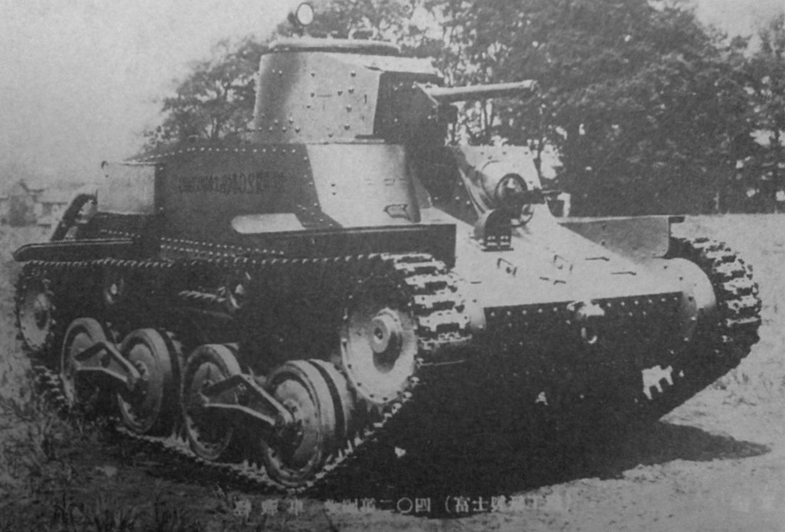

The Type 95 Ha-Go was a Japanese light tank developed in 1937, intended for reconnaissance and infantry support in the early stages of World War II. It was designed to be fast and maneuverable, with a small, lightweight hull that allowed it to operate effectively in jungle and island terrain. The Ha-Go's armor was relatively thin, providing minimal protection against enemy fire. Despite its limitations, it was widely produced and saw action in China, Malaya, and the Pacific islands.

- Characteristics:
- Type: Light tank
- Weight: 7 tons
- Crew: 4
- Gun: 75mm
- Speed: 38 km/h